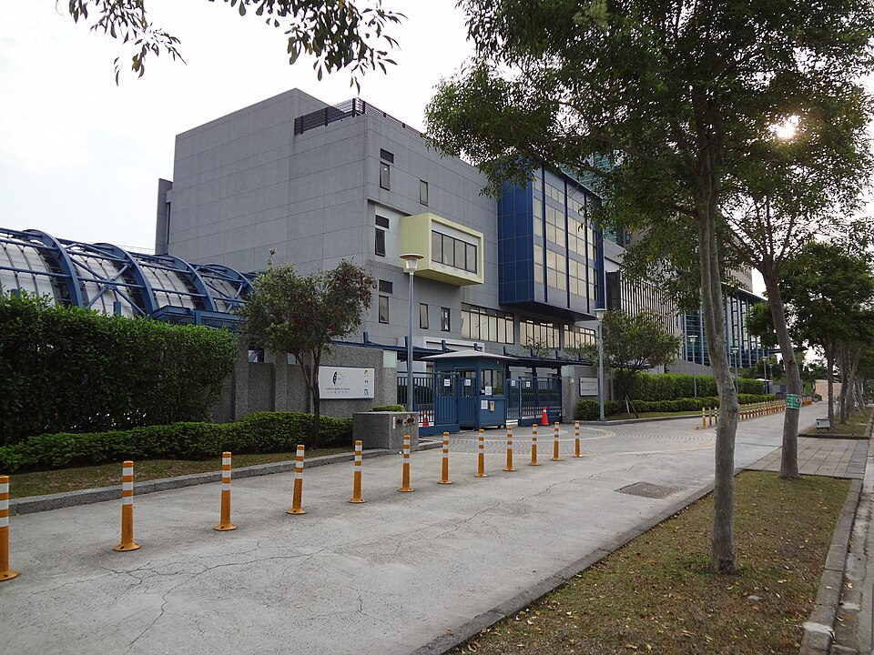

타이베이 유럽학교 스와이어 유럽 초등 캠퍼스(시린구) · 사진: Solomon203 / Wikimedia Commons, CC BY-SA 4.0
타이베이 유럽학교(Taipei European School, TES) — 한 학교 안에 영국·독일·프랑스 세 섹션이 있습니다
1. 어떤 학교인가 — 세 학교가 합쳐서 만들어졌습니다
타이베이 유럽학교는 원래 세 개의 따로 있던 학교였습니다. 타이베이 브리티시 스쿨(TBS), 에콜 프랑세즈 드 타이베이(EFT), 도이체 슐레 타이페이(DST) 세 곳이 1990년 무렵 타이베이에 사는 각 나라 주재원 가정의 자녀를 위해 세워졌고, 각자 운영하기보다 시설과 자원을 함께 쓰는 편이 낫다고 판단해 손을 잡았습니다. 그렇게 1992년에 같은 캠퍼스로 모인 것으로 알려져 있습니다.
지금은 비영리 재단 하나가 운영하는 단일 학교입니다. 행정·재정·건물·시설은 통합돼 있고, 커리큘럼만 섹션별로 각 나라 방식을 따릅니다. 여기에 2002년에 고등 과정이 더해진 것으로 알려져 있습니다. 학교는 FOBISIA(아시아 영국계 국제학교 연맹) 회원이며, 프랑스 AEFE, 독일 ZfA(연방행정청 해외학교국)와도 연계돼 있습니다. 즉 세 나라 교육 당국이 각각 인정하는 과정이 한 캠퍼스 안에 나란히 있는 셈입니다.
2. 캠퍼스가 둘 — 만 11세에 학교를 옮깁니다
TES는 두 캠퍼스로 운영됩니다. 이름이 둘 다 "스와이어(Swire)"로 시작해서 헷갈리기 쉬우니 나눠서 보겠습니다.
· 스와이어 유럽 초등 캠퍼스(EPC) — 시린구 원린로(WenLin Road). 대략 만 3세부터 11세까지. 타이베이 시내 쪽입니다.
· 스와이어 유럽 중등 캠퍼스(ESC) — 양명산(Yang Ming Shan) 젠예로(JianYe Road). 만 11세 이상. 시내가 아니라 산 위입니다.
여기가 실제 생활에서 가장 크게 작용하는 부분입니다. 아이가 만 11세가 되면 다니는 캠퍼스가 바뀌고, 그 캠퍼스는 산 위에 있습니다. 시린구 근처에 집을 구해 초등 통학이 편했더라도, 중등에 올라가면 양명산까지 올라가는 통학으로 조건이 달라집니다. 형제가 둘이고 나이 차가 있으면 두 캠퍼스로 동시에 보내야 하는 기간도 생깁니다.
그래서 집을 구하실 때 지금 학년이 아니라 앞으로 몇 년을 보고 계산하셔야 합니다. 종이에 한 줄만 적어 보세요. "우리 아이가 만 11세가 되는 해는 몇 년인가." 주재원 임차 계약이 보통 2~3년이라, 이 한 줄이 계약을 한 번 더 할지 말지를 정합니다.
3. 핵심 — 섹션을 고르는 것이 곧 나라를 고르는 것입니다
세 섹션은 같은 건물을 쓰지만 배우는 내용과 치르는 시험이 다릅니다.
| 항목 | 영국 섹션 | 프랑스 섹션 | 독일 섹션 |
|---|---|---|---|
| 따르는 교육과정 | 영국 국가교육과정 → IB 과정 | 프랑스 국가교육과정 | 독일 교육과정 |
| 주 수업 언어 | 영어 | 프랑스어 | 독일어 |
| 중간 관문 | IGCSE 또는 IB MYP(아래 4번 참고) | 브르베(Brevet) | 독일 과정의 중등 단계 |
| 마지막에 받는 것 | IB 디플로마(CP 포함) | 바칼로레아 | 아비투어 방향 |
| 한국 학생 비중 | 대부분 여기로 | 드묾 | 드묾 |
※ 각 섹션의 과정 구성과 입학 요건은 학년·연도에 따라 달라질 수 있습니다. 확정된 사실로 삼지 마시고 학교 입학처의 올해 안내로 확인하세요.
표에서 보시듯, 한국 주재원 가정은 거의 영국 섹션으로 갑니다. 독일·프랑스 섹션은 해당 언어를 모국어 수준으로 쓰는 가정을 전제로 하기 때문에 현실적으로 선택지가 아닙니다. 다만 이 구조 자체가 아이에게 주는 것이 있습니다. 같은 학교에 독일어·프랑스어를 모국어로 쓰는 또래가 늘 있고, 학교가 그 언어 교사와 자원을 이미 갖추고 있습니다. 제2외국어를 진지하게 가져갈 계획이라면 환경이 유리한 편입니다. → 프랑스어 가이드
4. 영국 섹션에서 꼭 확인할 것 — 과정이 바뀌는 중입니다
여기가 이 글에서 가장 중요한 부분입니다. 영국 섹션은 오랫동안 이렇게 알려져 왔습니다. 만 11~14세에 영국 국가교육과정 → IGCSE → IB 디플로마. 영국식으로 시작해서 IB로 마무리하는, 아시아에서 드물지 않은 형태입니다.
그런데 2022년부터 IB MYP가 기존 중등 과정을 단계적으로 대체해 온 것으로 알려져 있습니다. 단계적이라는 말이 중요합니다. 학년에 따라 이수하는 과정이 다를 수 있다는 뜻이기 때문입니다.
학부모 입장에서 이게 왜 문제가 되냐면, 검색해서 읽게 되는 글의 대부분이 전환 이전에 쓰였기 때문입니다. 한국어 후기나 유학원 소개 글에 "IGCSE를 보고 IB로 간다"고 적혀 있어도, 지금 아이가 그 학년에 갔을 때 같을 거라는 보장이 없습니다. 거짓말이 아니라 시점이 다른 글입니다.
그래서 질문을 이렇게 바꾸시면 됩니다. 학교에 문의하실 때 "영국 섹션은 어떤 과정인가요?"라고 묻지 마시고, "우리 아이가 Year 10이 되는 해에 그 학년은 무엇을 이수하고, 마지막에 어떤 자격을 받습니까?"라고 물으세요. 학년과 연도를 넣는 것이 핵심입니다. 그리고 인터넷에서 읽은 글은 작성 연도부터 확인하시는 습관을 들이시면 좋습니다.
5. 타이베이 아메리칸 스쿨과 무엇이 다른가
타이베이에서 한국 가정이 가장 많이 비교하는 두 학교입니다. 성격이 꽤 다릅니다.
· 타이베이 아메리칸 스쿨(TAS) — 미국식. 미국식 졸업장을 받고 AP 과목으로 깊이를 더하는 구조로 알려져 있습니다. 과목을 골라 담는 방식이고, 미국 대학 진학과 결이 맞습니다. → AP 과목 선택
· 타이베이 유럽학교(TES) — 유럽식. 영국 섹션 기준으로 IB 디플로마로 마무리합니다. 과목 6개를 정해진 그룹에서 고르고 소논문·지식이론·창의체험활동이 함께 붙는, 폭이 넓고 기한 관리가 중요한 구조입니다. → IB DP 점수
고르는 기준은 대학 이름이 아니라 아이의 공부 방식 쪽이 더 정확합니다. 잘하는 과목에 집중해 깊이 파는 아이에게는 미국식이, 여러 과목을 고르게 끌고 가고 마감을 스스로 관리하는 아이에게는 IB가 덜 힘듭니다. 여기에 통학을 얹으시면 됩니다. TES 중등은 양명산이라 시내 거주 가정에는 통학 시간이 꽤 듭니다.
6. 한국(주재원) 학생이 겪는 어려움과 준비
· ① 만 11세에 캠퍼스와 평가 방식이 같이 바뀝니다. 장소만 옮기는 게 아니라 채점 방식도 달라지는 시기라 성적이 한 번 흔들리는 아이가 많습니다. → 형성평가·총괄평가
· ② 기준표 채점이 낯섭니다. "몇 점 맞았나"가 아니라 항목별로 매겨집니다. describe·analyse·evaluate가 무엇을 다르게 요구하는지 모르면 열심히 써도 엉뚱한 칸에서 깎입니다.
· ③ 영어로 된 수학. 계산은 되는데 지문을 못 읽고, 풀이 과정을 문장으로 설명하라는 요구에 막힙니다. → 알지브라 공부법
· ④ 중국어가 한 과목 더 붙습니다. 대만에 있는 학교라 중국어를 배우게 되는데, 대만은 번체자를 씁니다. 한국 학생은 한자어 덕을 보긴 하지만 과목 수가 하나 느는 것은 분명합니다. → 중국어 가이드
· ⑤ 디플로마 과목 조합을 미리 정해야 합니다. 대학 방향에 따라 HL로 올려야 하는 과목이 달라지고, 그 결정은 신청 마감 전에 끝나 있어야 합니다. → 과목 신청(Course Selection)
준비의 순서는 단순합니다. 영어는 회화가 아니라 학습 영어(지시어 구분, 주장·근거·설명 구조의 문단), 수학은 개념이 아니라 영어 용어와 서술, 과제는 받은 주에 기준표를 함께 읽기. 이 셋을 잡으면 대부분 자리를 찾습니다. → 영어 공부법 · 숙제·과제 관리
7. 타이베이의 강점 — 시차 1시간
대만은 한국보다 1시간 느립니다. 타이베이 오후 5시가 한국 저녁 6시라, 아이가 집에 돌아온 직후에 한국 강사진과 실시간 수업을 잡을 수 있습니다. 주재원 가정이 많은 도시 중에서도 시차 조건이 가장 좋은 편입니다.
타이베이 현지에는 중국어 학원과 영어 회화 수업은 많지만, IB 기준표를 한국어로 풀어 줄 강사는 찾기 어렵습니다. 그런데 아이가 막히는 지점은 대개 회화가 아니라 과제가 요구하는 것을 읽어 내는 일입니다. 아이의 실제 과제물과 돌려받은 채점표를 화면에 띄워 놓고 함께 읽는 1:1 화상수업이 가장 빠릅니다. 중등 캠퍼스가 양명산이라 통학에 시간이 드는 점을 생각하면, 이동 없는 수업이라는 것 자체도 적지 않은 이점입니다.
정리
타이베이 유럽학교는 영국·독일·프랑스 세 섹션이 한 캠퍼스에 모인 형태이고, 섹션을 고르는 일은 수업 언어와 졸업 시험, 대학 방향을 함께 고르는 일입니다. 한국 가정은 거의 영국 섹션으로 가는데, 그 영국 섹션조차 중등 과정이 바뀌는 중이라 오래된 글을 그대로 믿으시면 안 됩니다. 학교에는 학년과 연도를 넣어 물어보시고, 생활에서는 만 11세에 캠퍼스가 양명산으로 바뀐다는 점을 집 계약 전에 계산해 두세요. 30분 무료 상담으로 아이 학년에 맞춰 무엇부터 준비할지 짚어 드리겠습니다.